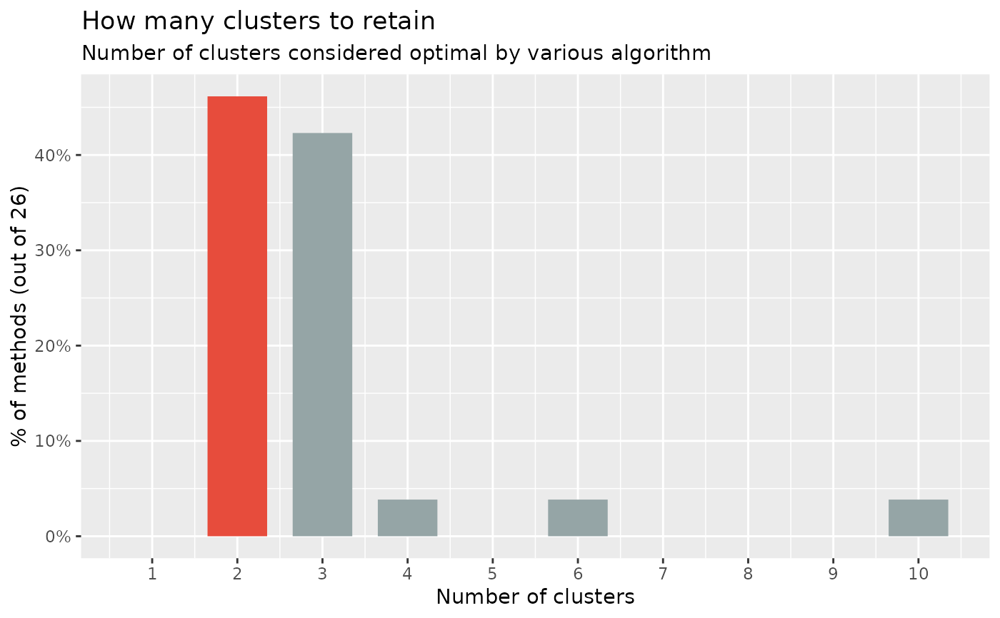
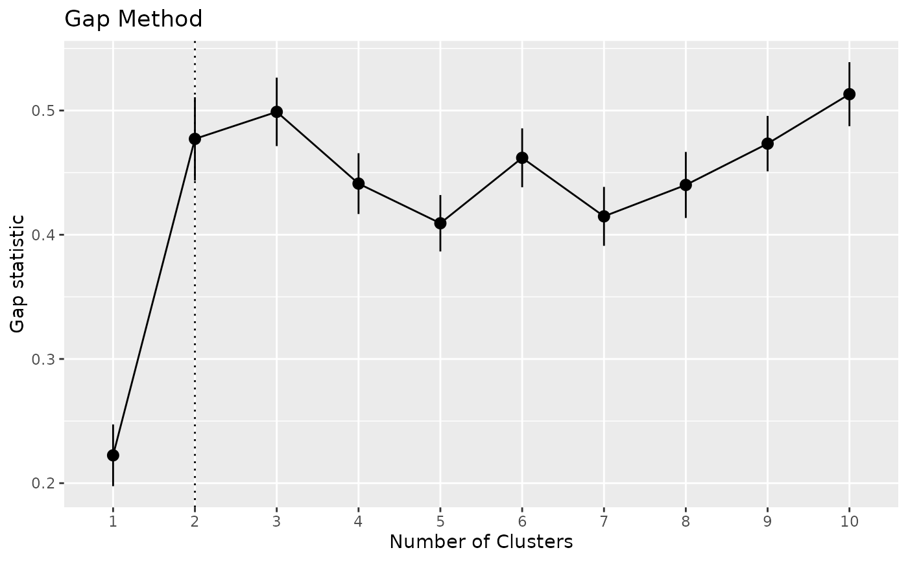
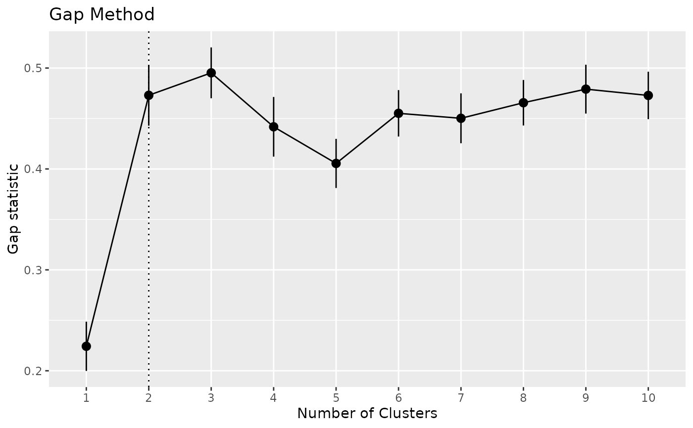
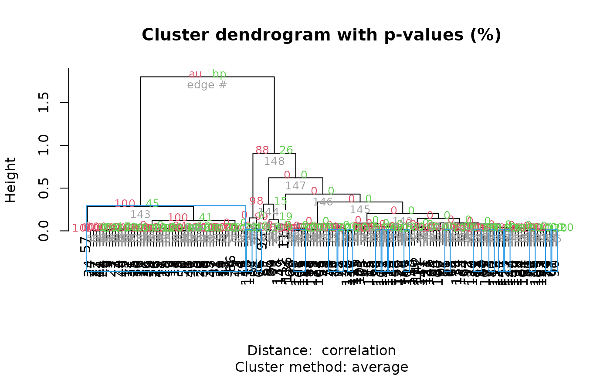
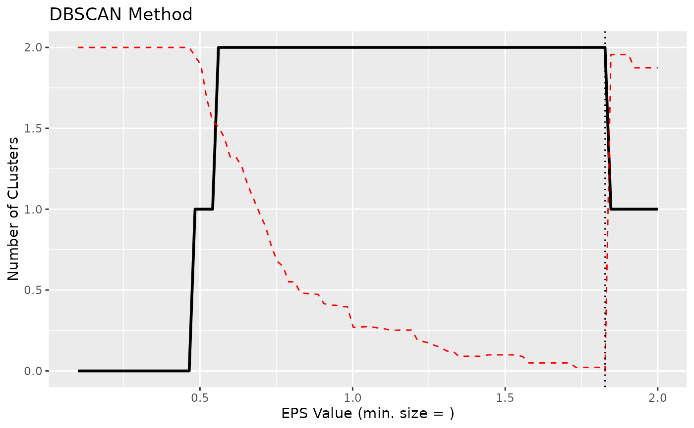
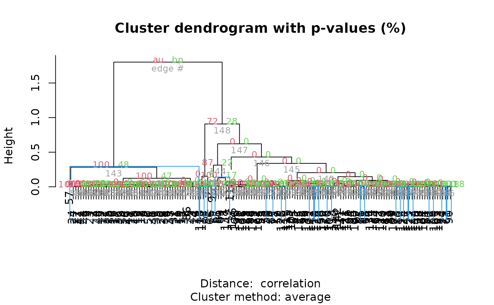

Similarly to n_factors() for factor / principal component analysis,
n_clusters() is the main function to find out the optimal numbers of clusters
present in the data based on the maximum consensus of a large number of
methods.
Essentially, there exist many methods to determine the optimal number of
clusters, each with pros and cons, benefits and limitations. The main
n_clusters function proposes to run all of them, and find out the number of
clusters that is suggested by the majority of methods (in case of ties, it
will select the most parsimonious solution with fewer clusters).
Note that we also implement some specific, commonly used methods, like the Elbow or the Gap method, with their own visualization functionalities. See the examples below for more details.
Usage
n_clusters(
x,
standardize = TRUE,
include_factors = FALSE,
package = c("easystats", "NbClust", "mclust"),
fast = TRUE,
nbclust_method = "kmeans",
n_max = 10,
...
)
n_clusters_elbow(
x,
standardize = TRUE,
include_factors = FALSE,
clustering_function = stats::kmeans,
n_max = 10,
...
)
n_clusters_gap(
x,
standardize = TRUE,
include_factors = FALSE,
clustering_function = stats::kmeans,
n_max = 10,
gap_method = "firstSEmax",
...
)
n_clusters_silhouette(
x,
standardize = TRUE,
include_factors = FALSE,
clustering_function = stats::kmeans,
n_max = 10,
...
)
n_clusters_dbscan(
x,
standardize = TRUE,
include_factors = FALSE,
method = c("kNN", "SS"),
min_size = 0.1,
eps_n = 50,
eps_range = c(0.1, 3),
...
)
n_clusters_hclust(
x,
standardize = TRUE,
include_factors = FALSE,
distance_method = "correlation",
hclust_method = "average",
ci = 0.95,
iterations = 100,
...
)Arguments
- x
A data frame.
- standardize
Standardize the dataframe before clustering (default).
- include_factors
Logical, if
TRUE, factors are converted to numerical values in order to be included in the data for determining the number of clusters. By default, factors are removed, because most methods that determine the number of clusters need numeric input only.- package
Package from which methods are to be called to determine the number of clusters. Can be
"all"or a vector containing"easystats","NbClust","mclust", and"M3C".- fast
If
FALSE, will compute 4 more indices (setsindex = "allong"inNbClust). This has been deactivated by default as it is computationally heavy.- nbclust_method
The clustering method (passed to
NbClust::NbClust()asmethod).- n_max
Maximal number of clusters to test.
- ...
Arguments passed to or from other methods. For instance, when
bootstrap = TRUE, arguments liketypeorparallelare passed down tobootstrap_model().Further non-documented arguments are:
digits,p_digits,ci_digitsandfooter_digitsto set the number of digits for the output.groupscan be used to group coefficients. These arguments will be passed to the print-method, or can directly be used inprint(), see documentation inprint.parameters_model().If
s_value = TRUE, the p-value will be replaced by the S-value in the output (cf. Rafi and Greenland 2020).pdadds an additional column with the probability of direction (seebayestestR::p_direction()for details). Furthermore, see 'Examples' for this function.For developers, whose interest mainly is to get a "tidy" data frame of model summaries, it is recommended to set
pretty_names = FALSEto speed up computation of the summary table.
- clustering_function, gap_method
Other arguments passed to other functions.
clustering_functionis used byfviz_nbclust()and can bekmeans,cluster::pam,cluster::clara,cluster::fanny, and more.gap_methodis used bycluster::maxSEto extract the optimal numbers of clusters (see itsmethodargument).- method, min_size, eps_n, eps_range
Arguments for DBSCAN algorithm.
- distance_method
The distance method (passed to
dist()). Used by algorithms relying on the distance matrix, such ashclustordbscan.- hclust_method
The hierarchical clustering method (passed to
hclust()).- ci
Confidence Interval (CI) level. Default to
0.95(95%).- iterations
The number of bootstrap replicates. This only apply in the case of bootstrapped frequentist models.
Note
There is also a plot()-method implemented in the see-package.
Examples
# \donttest{
library(parameters)
# The main 'n_clusters' function ===============================
if (require("mclust", quietly = TRUE) && require("NbClust", quietly = TRUE) &&
require("cluster", quietly = TRUE) && require("see", quietly = TRUE)) {
n <- n_clusters(iris[, 1:4], package = c("NbClust", "mclust")) # package can be "all"
n
summary(n)
as.data.frame(n) # Duration is the time elapsed for each method in seconds
plot(n)
# The following runs all the method but it significantly slower
# n_clusters(iris[1:4], standardize = FALSE, package = "all", fast = FALSE)
}

# }
# \donttest{
x <- n_clusters_elbow(iris[1:4])
x
#> The Elbow method, that aims at minimizing the total intra-cluster variation (i.e., the total within-cluster sum of square), suggests that the optimal number of clusters is 2.
as.data.frame(x)
#> n_Clusters WSS
#> 1 1 596.00000
#> 2 2 220.87929
#> 3 3 138.88836
#> 4 4 113.64981
#> 5 5 90.22782
#> 6 6 95.25396
#> 7 7 72.75296
#> 8 8 64.61603
#> 9 9 59.48502
#> 10 10 59.10865
plot(x)

# }
# \donttest{
#
# Gap method --------------------
if (require("see", quietly = TRUE) &&
require("cluster", quietly = TRUE) &&
require("factoextra", quietly = TRUE)) {
x <- n_clusters_gap(iris[1:4])
x
as.data.frame(x)
plot(x)
}

# }
# \donttest{
#
# Silhouette method --------------------------
if (require("factoextra", quietly = TRUE)) {
x <- n_clusters_silhouette(iris[1:4])
x
as.data.frame(x)
plot(x)
}

# }
# \donttest{
#
if (require("dbscan", quietly = TRUE)) {
# DBSCAN method -------------------------
# NOTE: This actually primarily estimates the 'eps' parameter, the number of
# clusters is a side effect (it's the number of clusters corresponding to
# this 'optimal' EPS parameter).
x <- n_clusters_dbscan(iris[1:4], method = "kNN", min_size = 0.05) # 5 percent
x
head(as.data.frame(x))
plot(x)
x <- n_clusters_dbscan(iris[1:4], method = "SS", eps_n = 100, eps_range = c(0.1, 2))
x
head(as.data.frame(x))
plot(x)
}

# }
# \donttest{
#
# hclust method -------------------------------
if (require("pvclust", quietly = TRUE)) {
# iterations should be higher for real analyses
x <- n_clusters_hclust(iris[1:4], iterations = 50, ci = 0.90)
x
head(as.data.frame(x), n = 10) # Print 10 first rows
plot(x)
}

# }